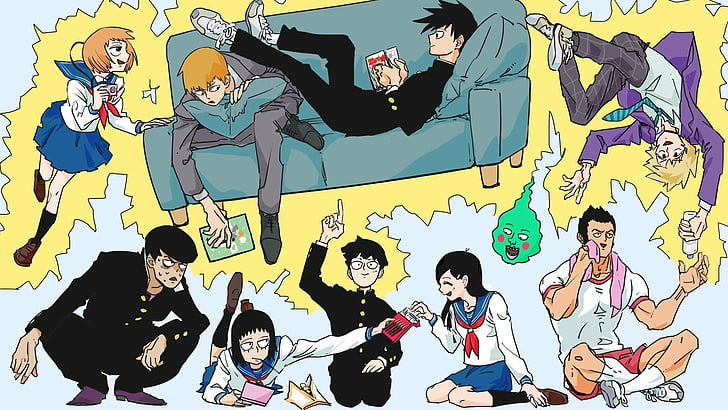
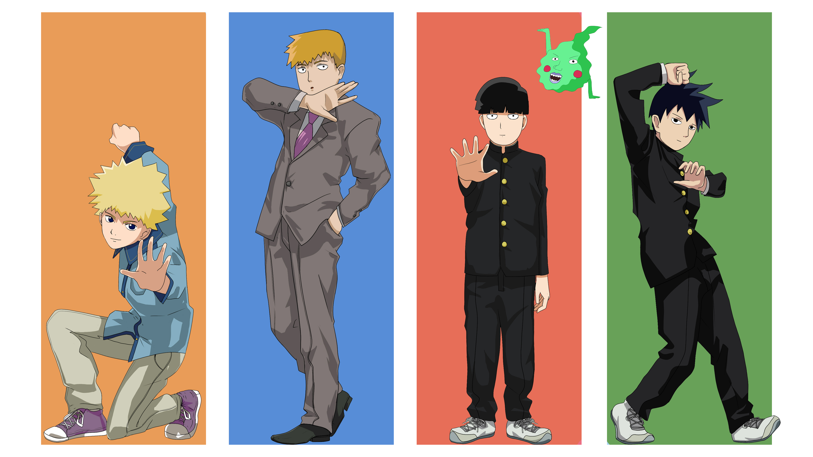
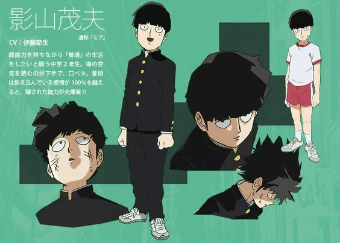
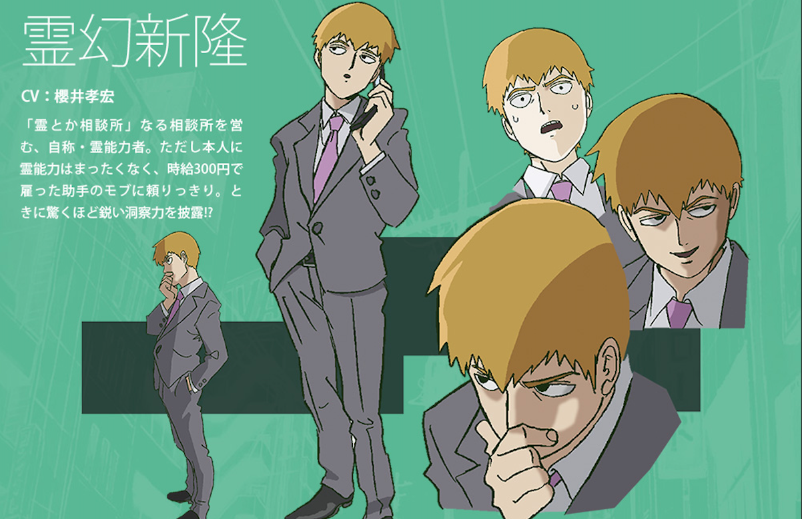
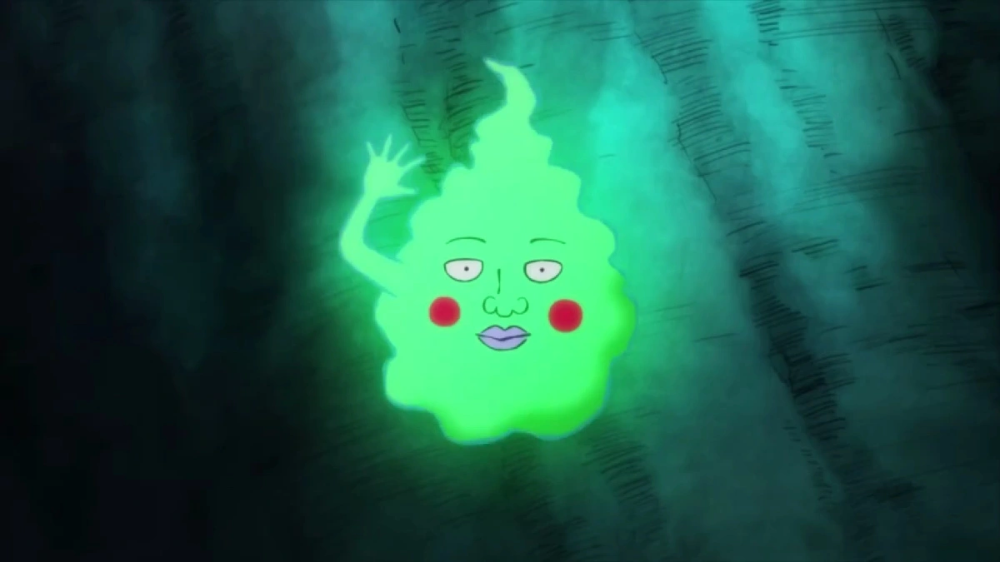

Mob Psycho 100

Introduction
Main Characters(Image)
Mob is a teenage boy with powerful psychic powers who stuggles having a simple life. With the help of his mentor, Reigen Arataka, they defeat psychic problem-causing monsters around the city.

Character Descriptions
Character Sheets/Images
Kageyama Shigeo is the main character psychic who has an undefeatable and intimidating power. He wants to achieve a life that is simpler but as his powers keep growing, he gets into more trouble.

Reigen Arataka is the desperate young master of Shigeo. He also calls himself a known "psychic" that is very willing to help mob (aka Shigeo) in any way.

Dimple is originally an evil spirit mob met and defeated along the course of the show. At first he was an enemy of mob, but he eventually stuck to mob and is seen talking to him sometimes.
